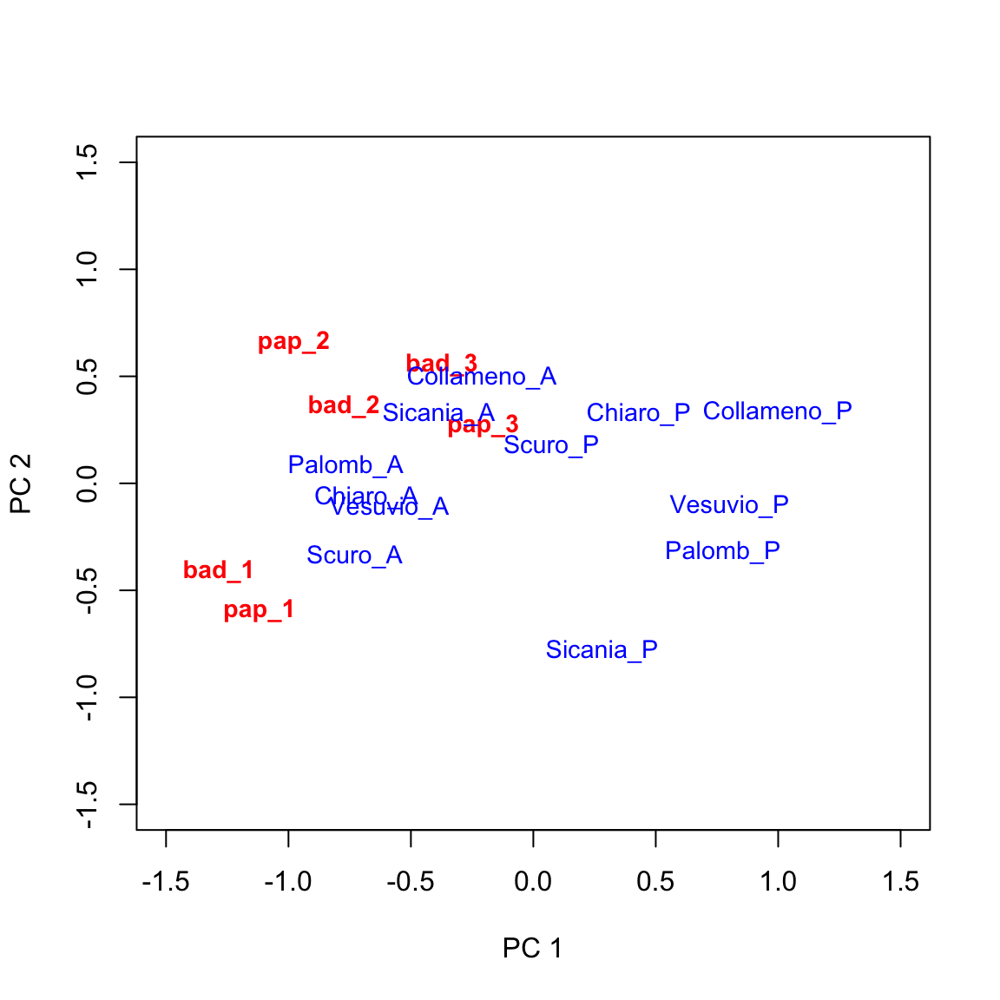
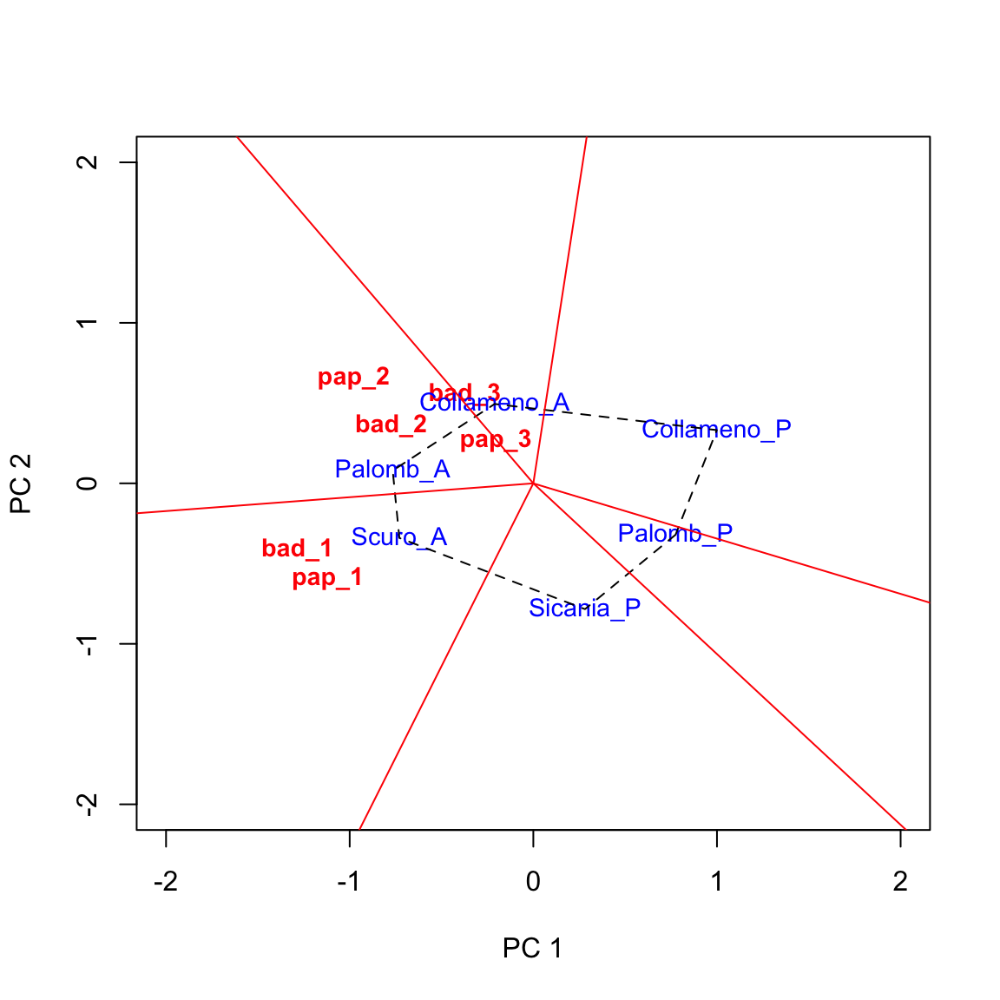

library(dplyr)
library(tidyr)
library(statforbiology)
dataset <- getAgroData("fabaBean")
GEmedie <- dataset %>%
group_by(Genotype, Environment) %>%
dplyr::summarise(Yield = mean(Yield)) %>%
pivot_wider(names_from = Environment,
values_from = Yield,
id_cols = Genotype)
GEmedie
## # A tibble: 12 × 7
## # Groups: Genotype [12]
## Genotype bad_1 bad_2 bad_3 pap_1 pap_2 pap_3
## <chr> <dbl> <dbl> <dbl> <dbl> <dbl> <dbl>
## 1 Chiaro_A 4.11 2.34 4.12 4.63 2.41 3.85
## 2 Chiaro_P 2.51 1.33 4.20 3.32 1.40 4.32
## 3 Collameno_A 3.25 2.11 4.38 3.85 2.23 4.07
## 4 Collameno_P 1.91 0.848 3.86 2.52 0.985 4.05
## 5 Palomb_A 3.84 2.08 4.20 5.05 2.68 4.67
## 6 Palomb_P 2.25 0.972 3.26 3.27 0.883 4.01
## 7 Scuro_A 4.37 2.10 4.15 4.86 2.13 4.20
## 8 Scuro_P 3.05 1.64 3.93 3.72 1.75 4.51
## 9 Sicania_A 3.83 1.94 4.50 3.96 2.24 4.24
## 10 Sicania_P 3.27 0.99 3.73 4.05 0.822 3.90
## 11 Vesuvio_A 4.14 2.02 4.03 4.50 2.26 4.32
## 12 Vesuvio_P 2.12 1.18 3.52 3.10 0.938 3.63In a recent post we have seen that we can use Principal Component Analyses (PCA) to elucidate the ‘genotype by environment’ relationship (see this post). Whenever the starting point for PCA is the doubly-centered (centered by rows and columns) matrix of yields across environments, we talk about AMMI analysis, which is often used to get insight into the stability of genotype yields across environments.
By changing the starting matrix, we can obtain a different perspective and put focus on the definition of macroenvironments and on the selection of winning genotypes. In particular, if the two-way matrix of yields across environments is only column-centered before PCA, we talk about GGE analysis (Yan et al., 2000). In spite of some academic debate (see Gauch, 2006, Yan et al., 2007, Gauch et al., 2008), AMMI and GGE analyses are both useful and can be used as two complementary tools for the analysis of multi-environment genotype data.
In order to discover the main peculiarities of GGE analysis, we will use the same example as in the previous post about AMMI analysis.
A MET with faba bean
This experiment consists of 12 faba bean genotypes (well, it was, indeed, 6 genotypes in two sowing dates; but, let’s disregard this detail from now on) in four blocks, two locations and three years (six environments, in all). The dataset is online available as ‘fabaBean.csv’ and it has been published by Stagnari et al. (2007).
We have seen that the starting point for AMMI analyses is the two-way matrix of yields across environments, which is obtained in the box below, by using a few functions from the tidyverse.
While with AMMI analysis the above matrix is doubly-centered (by rows and columns), with GGE analysis it is only column-centered, to remove the overall mean and the environment main effect. As the result, the centered matrix will contain the Genotype main effect (G) and the Genotype by Environment interaction (GE), that is why this technique is named GGE analysis. Let’s do such centering.
# Means for environments
envMeans <- apply(GEmedie[,-1], 2, mean)
GGEmatrix <- sweep(GEmedie[,-1], 2, envMeans)
rownames(GGEmatrix) <- unlist(GEmedie[,1])What do the above values mean? For each genotype, they are the yield differences (in tons per hectare) with respect to the average yield in each environment; for example, ‘Scuro_P’ shows a value of 0.0077 at ‘bad_2’, which is close to zero and indicates that the yield of this genotype was exactly equal to the environmental average in that location. On the other hand, ‘Scuro_A’ at ‘bad_1’, gave a value of 1.15, which is very high and indicates that this genotype outperformed all the others in that location.
The importance of the GGE matrix is that it contains both the genotype and the genotype by environment effects, which are fundamental to compare the performances of genotypes across anvironments.
Decomposing the GGE matrix
Once we have understood the importance of the GGE matrix, we might be willing to summarise it by way of some appropriate statistical method. Thinking of a Principal Component Analysis (PCA) is fairly obvious, as we did for AMMI analysis in the previous post.
Thus, we can use Singular Value Decomposition (SVD), to decompose our GGE matrix into the product of two matrices:
\[GGE = S_g \, S_e^T\]
where \(S_g\) is a matrix of genotype scores and \(S_e\) is a matrix of environment scores. It does not matter much how (and why) we obtain these matrices, I will just show you a swift R solution in the box below.
U <- svd(GGEmatrix)$u
V <- svd(GGEmatrix)$v
D <- diag(svd(GGEmatrix)$d)
Sg <- U %*% sqrt(D)
Se <- V %*% sqrt(D)
row.names(Sg) <- rownames(GGEmatrix)
row.names(Se) <- colnames(GGEmatrix)
colnames(Sg) <- colnames(Se) <- paste("PC", 1:6, sep ="")
round(Sg, 3)
## PC1 PC2 PC3 PC4 PC5 PC6
## Chiaro_A -0.682 -0.064 -0.441 -0.274 0.022 0.051
## Chiaro_P 0.431 0.326 0.182 0.217 0.225 -0.177
## Collameno_A -0.211 0.494 -0.267 -0.116 0.157 -0.099
## Collameno_P 0.999 0.332 0.003 0.180 -0.065 0.221
## Palomb_A -0.766 0.080 0.595 -0.268 0.254 0.170
## Palomb_P 0.775 -0.320 0.166 -0.306 -0.211 0.015
## Scuro_A -0.729 -0.340 -0.068 0.135 -0.020 -0.160
## Scuro_P 0.075 0.175 0.308 0.003 -0.263 -0.232
## Sicania_A -0.387 0.325 -0.197 0.386 -0.091 0.130
## Sicania_P 0.281 -0.784 -0.010 0.357 0.223 0.029
## Vesuvio_A -0.588 -0.116 0.029 0.039 -0.336 0.080
## Vesuvio_P 0.801 -0.107 -0.299 -0.352 0.106 -0.028
round(Se, 3)
## PC1 PC2 PC3 PC4 PC5 PC6
## bad_1 -1.283 -0.410 -0.242 0.431 -0.305 0.040
## bad_2 -0.773 0.362 -0.311 -0.323 -0.073 -0.344
## bad_3 -0.373 0.557 -0.119 0.531 0.400 -0.035
## pap_1 -1.118 -0.591 0.318 -0.230 0.369 -0.020
## pap_2 -0.978 0.659 0.080 -0.293 -0.074 0.286
## pap_3 -0.204 0.270 0.796 0.205 -0.201 -0.148Let’s have a look at \(S_g\) and \(S_e\): they are two interesting entities. Both matrices have 6 columns (that is the minimum between the number of genotypes and the number of environments). \(S_g\) has 12 rows, one per genotype: these are the so-called genotype scores: each genotype has six scores. \(S_e\) has six rows, one per environment (environment scores) and, analogously to each genotype, each environment has six scores.
The most interesting thing to note is that, as expected, these two matrices, by multiplication, return the original GGE matrix.
round(Sg %*% t(Se), 3)
## bad_1 bad_2 bad_3 pap_1 pap_2 pap_3
## Chiaro_A 0.885 0.710 0.133 0.730 0.682 -0.297
## Chiaro_P -0.713 -0.297 0.210 -0.580 -0.323 0.170
## Collameno_A 0.030 0.485 0.390 -0.055 0.505 -0.077
## Collameno_P -1.313 -0.782 -0.127 -1.382 -0.743 -0.095
## Palomb_A 0.620 0.445 0.213 1.150 0.957 0.520
## Palomb_P -0.970 -0.657 -0.735 -0.632 -0.845 -0.135
## Scuro_A 1.150 0.475 0.160 0.960 0.400 0.058
## Scuro_P -0.170 0.008 -0.062 -0.182 0.020 0.365
## Sicania_A 0.610 0.315 0.513 0.053 0.507 0.088
## Sicania_P 0.050 -0.640 -0.262 0.145 -0.905 -0.252
## Vesuvio_A 0.918 0.388 0.035 0.600 0.537 0.175
## Vesuvio_P -1.098 -0.450 -0.467 -0.807 -0.790 -0.520If you some memories about matrix multiplication, you will remeber that the GGE value for each genotype in each environment can be obtained as the sum of products of genotype scores and environments scores:
\[gge_{ij} = \sum_{z = 1}^n \left[ S_{g(iz)} \cdot S_{e(jz)} \right]\]
For example, let’s consider the first genotype and the first environment. The genotype and environments scores are in the first columns of \(S_g\) and \(S_e\); if we multiply the elements in the same positioning (1st with 1st, 2nd with 2nd, and so on) and sum up, we get:
-0.682 * -1.283 +
-0.064 * -0.410 +
-0.441 * -0.242 +
-0.274 * 0.431 +
0.022 * -0.305 +
0.051 * 0.040
## [1] 0.885204It’s done: we have transformed the GGE effect for ‘Chiaro_A’ in ‘bad_1’ into the sum of multiplicative terms. The final product will be the highest whenever the genotype and environment scores have the same signs, within each couple in the box above.
Reducing the rank
Instead of taking all available columns in \(S_g\) and \(S_e\), for the sake of simplicity, we could have taken only a subset of those columns. The Eckart-Young (1936) theorem says that, if we take \(m < 6\) columns, we obtain the best possible approximation of GGE in reduced rank space. For example, let’s use the first two columns of \(S_g\) and \(S_e\) (the first two principal component scores):
PC <- 2
Sg2 <- Sg[,1:PC]
Se2 <- Se[,1:PC]
GGE2 <- Sg2 %*% t(Se2)
print ( round(GGE2, 3) )
## bad_1 bad_2 bad_3 pap_1 pap_2 pap_3
## Chiaro_A 0.901 0.504 0.219 0.800 0.624 0.122
## Chiaro_P -0.686 -0.215 0.020 -0.674 -0.207 0.000
## Collameno_A 0.068 0.342 0.354 -0.057 0.532 0.176
## Collameno_P -1.418 -0.652 -0.189 -1.313 -0.758 -0.114
## Palomb_A 0.950 0.621 0.330 0.809 0.801 0.178
## Palomb_P -0.863 -0.715 -0.467 -0.677 -0.968 -0.244
## Scuro_A 1.076 0.441 0.083 1.017 0.489 0.057
## Scuro_P -0.168 0.006 0.070 -0.187 0.043 0.032
## Sicania_A 0.363 0.417 0.325 0.240 0.592 0.167
## Sicania_P -0.040 -0.501 -0.541 0.149 -0.791 -0.269
## Vesuvio_A 0.802 0.412 0.155 0.726 0.498 0.089
## Vesuvio_P -0.985 -0.658 -0.359 -0.833 -0.854 -0.192GGE2 is not equal to GGE, but it is a close approximation. A close approximation in the least squares sense: the sum of squared elements in GGE2 is as close as possible (with \(n = 2\)) to the sum of squared elements in GGE:
sum(GGE2^2)
## [1] 23.60912
sum(GGEmatrix^2)
## [1] 25.24985We see that the sum of squares in GGE2 is 94% of the sum of squares in GGE. A very good approximation, isn’t it? It means that the variability of yields across environments is described well enough by using a relatively low number of parameters (scores).
Simple GGE analysis with R
Although there are certainly more exhaustive solutions, for the sake of simplicity, I have coded the GGE() function, that is available in the statforbiology package; it works equally well with raw MET data, containing all replicated values, or with the ‘genotype by environment’ average values. The statforbiology package is the companion package for this website and must have been installed as detailed in this page here. In the box below, I am using the GGE() function on raw data.
tab <- with(dataset, GGE(Yield, Genotype, Environment, Block, PC = 2))
tab$genotype_scores
## PC1 PC2
## Chiaro_A -0.68155278 -0.06429886
## Chiaro_P 0.43068275 0.32576146
## Collameno_A -0.21061911 0.49449808
## Collameno_P 0.99907773 0.33159670
## Palomb_A -0.76575818 0.07957138
## Palomb_P 0.77465315 -0.32010018
## Scuro_A -0.72947712 -0.34046924
## Scuro_P 0.07462862 0.17542914
## Sicania_A -0.38653879 0.32490370
## Sicania_P 0.28122610 -0.78391426
## Vesuvio_A -0.58767986 -0.11584246
## Vesuvio_P 0.80135748 -0.10713545
tab$environment_scores
## PC1 PC2
## bad_1 -1.2834363 -0.4099307
## bad_2 -0.7732097 0.3621530
## bad_3 -0.3734263 0.5565962
## pap_1 -1.1182795 -0.5910472
## pap_2 -0.9778134 0.6587901
## pap_3 -0.2038688 0.2699500
tab$GGE_summary
## PC Singular_value PC_SS Perc_of_Total_SS
## 1 1 4.6327397 21.46227711 84.9996363
## 2 2 1.4652115 2.14684465 8.5024070
## 3 3 0.9099052 0.82792745 3.2789406
## 4 4 0.7535488 0.56783584 2.2488685
## 5 5 0.4405921 0.19412143 0.7688024
## 6 6 0.2254758 0.05083935 0.2013452Why is this useful?
Did you get lost? Hope you didn’t, but let’s make a stop and see where we are standing now. We started from the GGE matrix and found a way to decompose it as the product of two matrices, i.e. \(S_g\) and \(S_e\), a matrix of genotype scores and a matrix of environment scores. We discovered that we could obtain a good approximation of GGE by working in reduced rank space and we only used two genotypic scores and two environment scores, in place of the available six.
This is great! Now we have the ability of drawing a biplot, i.e. we can plot both genotypic scores and environmental scores in a dispersion graph (biplot: two plots into one), as we see below. We can use the swift biplot() method for AMMI and GGE objects, as available in the aomisc package.
biplot(tab, xlim = c(-1.5, 1.5), ylim = c(-1.5, 1.5),
xlab = "PC 1", ylab = "PC 2")
This graph provides a very effective description of GE interaction effects. I will not go into detail, here. Just a few simple comments:
- genotypes lying close to the origin of the axes tend to have average behaviours across environments (their genotypic scores will be close to zero).
- environments lying close to the origin of the axes tend neither to be favourable nor unfavourable to most of the genotypes and will not be very discriminating.
- genotypes lying far away from the origin of axes tend to be far from the average yield in several environments, either in a positive or negative sense.
- environments lying far away from the origin of axes tend to be very discriminating (favourable for some genotypes and unfavourable for others).
- when genotype and environment markers are far away from the origin and close to each other, their scores will be high and of same sign. This is an indicator of very good performances.
Augmenting the biplot
The above biplot can be augmented in several ways (see Yan and Tinker, 2006). The ‘which-won-where’ pattern is rather useful and it consists of:
- drawing a polygon with vertices on the genotypes that are furthest away from the origin of axes, so that all other genotypes are contained within the polygon.
- drawing the perpendicular lines to each side of the polygon, starting from the origin of axes.
In order to obtain this type of biplot, we can use the ‘biplot.polygonView()’ function in the ‘statforbiology’ package, as shown in the box below.
biplot.polygonView(tab, xlim = c(-2, 2), ylim = c(-2, 2))
Based on the above graph we can make the following conclusions.
- Genotypes located on the vertices of the polygon were the best/worst in some environments.
- The perpendicular lines divide the biplot into sectors, and the winning genotype for each sector is the one located on the respective vertex. In this example, ‘Palomb_A’ is the winning genotype in ‘bad_2’, ‘pap_2’ and ‘pap_3’, while ‘Collameno_A, is the winner in ’bad_3’. ‘Scuro_A’ is the winner in ‘bad_1’ and ‘pap_1’.
Thank you for reading, and… happy coding!
(P.S. If you enjoyed this post, check out my book “Field Research Methods in Agriculture: An Introduction with R” via the link below!)
Prof. Andrea Onofri
Department of Agricultural, Food and Environmental Sciences
University of Perugia (Italy)
Send comments to: andrea.onofri@unipg.it

Literature references
- Gauch, H.G., 2006. Statistical Analysis of Yield Trials by AMMI and GGE. Crop Science 46, 1488–1500.
- Gauch, H.G., Piepho, H.-P., Annicchiarico, P., 2008. Statistical Analysis of Yield Trials by AMMI and GGE: Further Considerations. Crop Science 48, 866–889.
- Yan, W., 2002. Singular-Value Partitioning in Biplot Analysis of Multienvironment Trial Data. Agronomy Journal 94, 990–996.
- Yan, W., 2001. GGEbiplot–A Windows Application for Graphical Analysis of Multienvironment Trial Data and Other Types of Two-Way Data. Agronomy Journal 93, 1111–1118.
- Yan, W., Cornelius, P.L., Crossa, J., Hunt, L.A., 2001. Two Types of GGE Biplots for Analyzing Multi-Environment Trial Data. Crop Science 41, 656–663.
- Yan, W., Hunt, L.A., Sheng, Q., Szlavnics, Z., 2000. Cultivar Evaluation and Mega-Environment Investigation Based on the GGE Biplot. Crop Science 40, 597–605.
- Yan, W., Kang, M.S., Ma, B., Woods, S., Cornelius, P.L., 2007. GGE Biplot vs. AMMI Analysis of Genotype-by-Environment Data. Crop Science 47, 643–653.
- Yan, W., Tinker, N.A., 2006. Biplot analysis of multi-environment trial data: Principles and applications. Canadian Journal of Plant Science 86, 1–9.
- Yan, W., Tinker, N.A., 2005. An Integrated Biplot Analysis System for Displaying, Interpreting, and Exploring Genotype x Environment Interaction. Crop Science 45, 1004–1016.